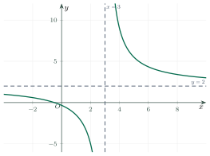
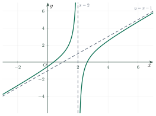
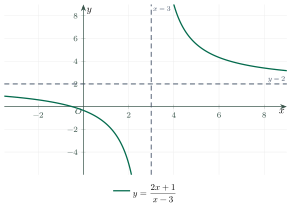
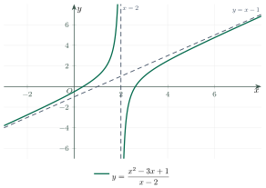

Asymptotes of GraphsĐường tiệm cận của đồ thị hàm số
Grade 12 · Topic: Applications of DerivativesLớp 12 · Chủ đề: Ứng dụng đạo hàm
1Lesson IntroductionGiới thiệu bài học
Learning goalsMục tiêu bài học
By the end of this lesson you can:
Sau bài học này, em có thể:
define horizontal, vertical and oblique asymptotes using limits;
định nghĩa tiệm cận ngang, tiệm cận đứng và tiệm cận xiên bằng giới hạn;
find all asymptotes of a rational function;
tìm tất cả các đường tiệm cận của một hàm phân thức;
explain why a common factor gives a hole and not a vertical asymptote;
giải thích vì sao nhân tử chung chỉ tạo ra điểm hổng chứ không tạo ra tiệm cận đứng;
read the asymptotes of a graph and state them in English.
đọc các đường tiệm cận trên đồ thị và phát biểu chúng bằng tiếng Anh.
2Mathematical VocabularyTừ vựng Toán học
asymptote – a line that the graph gets closer and closer to, but need not touch.
Đường tiệm cận – đường thẳng mà đồ thị tiến gần tới vô hạn.
vertical asymptote – a vertical line \(x=a\) near which the function becomes very large.
Tiệm cận đứng – đường thẳng đứng \(x=a\) mà khi \(x\) tiến gần \(a\) thì giá trị hàm số trở nên rất lớn.
horizontal asymptote – a horizontal line \(y=b\) that the graph approaches as \(x\) goes to infinity.
Tiệm cận ngang – đường nằm ngang \(y=b\) mà đồ thị tiến gần khi \(x\) ra xa vô cực.
oblique asymptote (also slant asymptote) – a slanted line \(y=ax+b\) with \(a\ne 0\).
Tiệm cận xiên – đường thẳng nghiêng \(y=ax+b\) với \(a\ne 0\).
rational function – a quotient of two polynomials, \(\dfrac{P(x)}{Q(x)}\).
Hàm phân thức – thương của hai đa thức, \(\dfrac{P(x)}{Q(x)}\).
numerator and denominator – the top and the bottom of a fraction.
Tử số và mẫu số – phần trên và phần dưới của phân số.
degree – the highest power of \(x\) in a polynomial.
Bậc – số mũ cao nhất của \(x\) trong đa thức.
quotient and remainder – the results of polynomial division.
Thương và số dư – kết quả của phép chia đa thức.
hole – a single missing point on a graph (a removable discontinuity).
Điểm hổng – một điểm bị thiếu trên đồ thị (gián đoạn có thể khử được).
3Useful English PhrasesCụm từ tiếng Anh thường gặp
Find all asymptotes of the graph of \(f\).
Tìm tất cả các đường tiệm cận của đồ thị hàm số \(f\).
The graph approaches the line \(y=2\) as \(x\) tends to infinity.
Đồ thị tiến gần đường thẳng \(y=2\) khi \(x\) tiến ra vô cực.
Find the limit as \(x\) approaches 3 from the right.
Tìm giới hạn khi \(x\) tiến đến 3 từ bên phải.
Does the graph have a vertical asymptote? Justify your answer.
Đồ thị có tiệm cận đứng không? Hãy giải thích.
Divide the numerator by the denominator.
Chia tử số cho mẫu số.
4Prerequisite ReviewÔn tập kiến thức nền
Two facts about limits are used all the time in this lesson. For every positive integer \(n\):
Hai kết quả về giới hạn được dùng liên tục trong bài này. Với mọi số nguyên dương \(n\):
If the numerator tends to a number \(k\ne 0\) and the denominator tends to \(0\), the fraction becomes very large. Its sign depends on the sign of \(k\) and on the side from which \(x\) approaches \(a\). For example:
Nếu tử số tiến đến số \(k\ne 0\) còn mẫu số tiến đến \(0\) thì phân số trở nên rất lớn. Dấu của nó phụ thuộc dấu của \(k\) và phía mà \(x\) tiến đến \(a\). Ví dụ:
5TheoryLý thuyết
5.1 Horizontal asymptoteTiệm cận ngang
DefinitionĐịnh nghĩa
The line \(y=b\) is a horizontal asymptote of the graph of \(y=f(x)\) if at least one of these holds:
Đường thẳng \(y=b\) là tiệm cận ngang của đồ thị hàm số \(y=f(x)\) nếu có ít nhất một trong hai điều kiện:
- \(\displaystyle\lim_{x\to+\infty}f(x)=b\)
- \(\displaystyle\lim_{x\to-\infty}f(x)=b\)
5.2 Vertical asymptoteTiệm cận đứng
DefinitionĐịnh nghĩa
The line \(x=a\) is a vertical asymptote of the graph of \(y=f(x)\) if at least one of these holds:
Đường thẳng \(x=a\) là tiệm cận đứng của đồ thị hàm số \(y=f(x)\) nếu có ít nhất một trong bốn điều kiện:
- \(\displaystyle\lim_{x\to a^{+}}f(x)=+\infty\)
- \(\displaystyle\lim_{x\to a^{+}}f(x)=-\infty\)
- \(\displaystyle\lim_{x\to a^{-}}f(x)=+\infty\)
- \(\displaystyle\lim_{x\to a^{-}}f(x)=-\infty\)

5.3 Oblique asymptoteTiệm cận xiên
DefinitionĐịnh nghĩa
The line \(y=ax+b\) with \(a\ne 0\) is an oblique asymptote of the graph of \(y=f(x)\) if at least one of these holds:
Đường thẳng \(y=ax+b\) với \(a\ne 0\) là tiệm cận xiên của đồ thị hàm số \(y=f(x)\) nếu có ít nhất một trong hai điều kiện:
- \(\displaystyle\lim_{x\to+\infty}\big[f(x)-(ax+b)\big]=0\)
- \(\displaystyle\lim_{x\to-\infty}\big[f(x)-(ax+b)\big]=0\)
To find \(a\) and \(b\) (for example when \(x\to+\infty\)):
Để tìm \(a\) và \(b\) (chẳng hạn khi \(x\to+\infty\)):
5.4 Rational functions: a quick methodHàm phân thức: cách làm nhanh
Let \(f(x)=\dfrac{P(x)}{Q(x)}\), where the fraction is already in lowest terms.
Cho \(f(x)=\dfrac{P(x)}{Q(x)}\), trong đó phân thức đã được rút gọn.
Vertical: if \(Q(a)=0\) and \(P(a)\ne 0\), then \(x=a\) is a vertical asymptote.
Đứng: nếu \(Q(a)=0\) và \(P(a)\ne 0\) thì \(x=a\) là tiệm cận đứng.
Horizontal: if \(\deg P\lt \deg Q\), the line \(y=0\) is a horizontal asymptote.
Ngang: nếu \(\deg P\lt \deg Q\) thì \(y=0\) là tiệm cận ngang.
Horizontal: if \(\deg P=\deg Q\), the line \(y=\dfrac{\text{leading coefficient of }P}{\text{leading coefficient of }Q}\) is a horizontal asymptote.
Ngang: nếu \(\deg P=\deg Q\) thì đường \(y=\dfrac{\text{hệ số cao nhất của }P}{\text{hệ số cao nhất của }Q}\) là tiệm cận ngang.
Oblique: if \(\deg P=\deg Q+1\), divide \(P\) by \(Q\). If \(P=Q\cdot(ax+b)+R\) with \(\deg R\lt \deg Q\), then \(y=ax+b\) is an oblique asymptote.
Xiên: nếu \(\deg P=\deg Q+1\), hãy chia \(P\) cho \(Q\). Nếu \(P=Q\cdot(ax+b)+R\) với \(\deg R\lt \deg Q\) thì \(y=ax+b\) là tiệm cận xiên.
If \(\deg P>\deg Q+1\), the graph has neither a horizontal nor an oblique asymptote.
Nếu \(\deg P>\deg Q+1\) thì đồ thị không có tiệm cận ngang và không có tiệm cận xiên.



6Worked ExamplesVí dụ có lời giải
ExampleVí dụ 1BasicCơ bản – One vertical and one horizontal asymptoteMột tiệm cận đứng và một tiệm cận ngang
Find all asymptotes of the graph of \(f(x)=\dfrac{2x+1}{x-3}\).
Tìm tất cả các đường tiệm cận của đồ thị hàm số \(f(x)=\dfrac{2x+1}{x-3}\).
Analysis: The denominator is zero at \(x=3\). The degrees of numerator and denominator are equal.
Phân tích: Mẫu số bằng 0 tại \(x=3\). Tử số và mẫu số có cùng bậc.
Domain: \(x\ne 3\). At \(x=3\) the numerator is \(7\ne 0\).
Tập xác định: \(x\ne 3\). Tại \(x=3\), tử số bằng \(7\ne 0\).
\(\displaystyle\lim_{x\to3^{+}}\frac{2x+1}{x-3}=+\infty\) and \(\displaystyle\lim_{x\to3^{-}}\frac{2x+1}{x-3}=-\infty\). So \(x=3\) is a vertical asymptote.
\(\displaystyle\lim_{x\to3^{+}}\frac{2x+1}{x-3}=+\infty\) và \(\displaystyle\lim_{x\to3^{-}}\frac{2x+1}{x-3}=-\infty\). Vậy \(x=3\) là tiệm cận đứng.
\(\displaystyle\lim_{x\to\pm\infty}\frac{2x+1}{x-3}=\lim_{x\to\pm\infty}\frac{2+\frac1x}{1-\frac3x}=2\). So \(y=2\) is a horizontal asymptote.
\(\displaystyle\lim_{x\to\pm\infty}\frac{2x+1}{x-3}=\lim_{x\to\pm\infty}\frac{2+\frac1x}{1-\frac3x}=2\). Vậy \(y=2\) là tiệm cận ngang.
ExampleVí dụ 2IntermediateTrung bình – A common factorCó nhân tử chung
Find all asymptotes of the graph of \(f(x)=\dfrac{x^2-1}{x^2-3x+2}\).
Tìm tất cả các đường tiệm cận của đồ thị hàm số \(f(x)=\dfrac{x^2-1}{x^2-3x+2}\).
Analysis: Factor first. A factor that cancels does not give a vertical asymptote.
Phân tích: Hãy phân tích thành nhân tử trước. Nhân tử được rút gọn thì không cho tiệm cận đứng.
Factor: \(f(x)=\dfrac{(x-1)(x+1)}{(x-1)(x-2)}=\dfrac{x+1}{x-2}\) for \(x\ne1,\ x\ne2\).
Phân tích: \(f(x)=\dfrac{(x-1)(x+1)}{(x-1)(x-2)}=\dfrac{x+1}{x-2}\) với \(x\ne1,\ x\ne2\).
At \(x=2\): \(\displaystyle\lim_{x\to2^{+}}\frac{x+1}{x-2}=+\infty\). So \(x=2\) is a vertical asymptote.
Tại \(x=2\): \(\displaystyle\lim_{x\to2^{+}}\frac{x+1}{x-2}=+\infty\). Vậy \(x=2\) là tiệm cận đứng.
At \(x=1\): \(\displaystyle\lim_{x\to1}\frac{x+1}{x-2}=-2\), a finite number. So \(x=1\) is not an asymptote; the graph has a hole at \((1,-2)\).
Tại \(x=1\): \(\displaystyle\lim_{x\to1}\frac{x+1}{x-2}=-2\) là một số hữu hạn. Vậy \(x=1\) không phải tiệm cận; đồ thị có điểm hổng tại \((1,-2)\).
\(\displaystyle\lim_{x\to\pm\infty}\frac{x+1}{x-2}=1\). So \(y=1\) is a horizontal asymptote.
\(\displaystyle\lim_{x\to\pm\infty}\frac{x+1}{x-2}=1\). Vậy \(y=1\) là tiệm cận ngang.
ExampleVí dụ 3IntermediateTrung bình – An oblique asymptoteTiệm cận xiên
Find all asymptotes of the graph of \(f(x)=\dfrac{x^2-3x+1}{x-2}\).
Tìm tất cả các đường tiệm cận của đồ thị hàm số \(f(x)=\dfrac{x^2-3x+1}{x-2}\).
Analysis: The degree of the numerator is one more than the degree of the denominator, so use polynomial division.
Phân tích: Bậc của tử số lớn hơn bậc của mẫu số đúng một đơn vị, nên dùng phép chia đa thức.
Divide: \(x^2-3x+1=(x-2)(x-1)-1\). The quotient is \(x-1\) and the remainder is \(-1\).
Chia: \(x^2-3x+1=(x-2)(x-1)-1\). Thương là \(x-1\), số dư là \(-1\).
So \(f(x)=x-1-\dfrac{1}{x-2}\).
Do đó \(f(x)=x-1-\dfrac{1}{x-2}\).
\(f(x)-(x-1)=-\dfrac1{x-2}\to0\) as \(x\to\pm\infty\). So \(y=x-1\) is an oblique asymptote.
\(f(x)-(x-1)=-\dfrac1{x-2}\to0\) khi \(x\to\pm\infty\). Vậy \(y=x-1\) là tiệm cận xiên.
At \(x=2\) the numerator is \(-1\ne0\), so \(x=2\) is a vertical asymptote. There is no horizontal asymptote because \(f(x)\to\pm\infty\) as \(x\to\pm\infty\).
Tại \(x=2\) tử số bằng \(-1\ne0\), nên \(x=2\) là tiệm cận đứng. Không có tiệm cận ngang vì \(f(x)\to\pm\infty\) khi \(x\to\pm\infty\).
ExampleVí dụ 4AdvancedNâng cao – Counting asymptotesĐếm số đường tiệm cận
How many asymptotes does the graph of \(f(x)=\dfrac{3x-1}{x^2-4}\) have? Name them.
Đồ thị hàm số \(f(x)=\dfrac{3x-1}{x^2-4}\) có bao nhiêu đường tiệm cận? Hãy nêu tên chúng.
Analysis: Look at the zeros of the denominator, then compare the degrees.
Phân tích: Xét các nghiệm của mẫu số, rồi so sánh bậc.
\(x^2-4=0\) gives \(x=2\) and \(x=-2\).
\(x^2-4=0\) cho \(x=2\) và \(x=-2\).
The numerator \(3x-1\) equals \(5\) at \(x=2\) and \(-7\) at \(x=-2\); both are non-zero. So \(x=2\) and \(x=-2\) are vertical asymptotes.
Tử số \(3x-1\) bằng \(5\) tại \(x=2\) và bằng \(-7\) tại \(x=-2\); cả hai đều khác 0. Vậy \(x=2\) và \(x=-2\) là các tiệm cận đứng.
\(\deg(3x-1)=1\lt 2=\deg(x^2-4)\), so \(y=0\) is a horizontal asymptote.
\(\deg(3x-1)=1\lt 2=\deg(x^2-4)\), nên \(y=0\) là tiệm cận ngang.
7PracticeBài tập luyện tập
A. Multiple ChoiceA. Trắc nghiệm nhiều lựa chọn
Which line is a vertical asymptote of \(y=\dfrac{x+2}{x-5}\)?
Đường thẳng nào là tiệm cận đứng của đồ thị \(y=\dfrac{x+2}{x-5}\)?
Answer: b. The denominator is zero at \(x=5\) and the numerator is \(7\ne0\). The line \(y=1\) is the horizontal asymptote.
Đáp án b. Mẫu số bằng 0 tại \(x=5\) còn tử số bằng \(7\ne0\). Đường \(y=1\) là tiệm cận ngang.
What is the horizontal asymptote of \(y=\dfrac{4x^2+1}{2x^2-x}\)?
Tiệm cận ngang của đồ thị \(y=\dfrac{4x^2+1}{2x^2-x}\) là đường nào?
Answer: b. The degrees are equal, so \(b=\dfrac{4}{2}=2\).
Đáp án b. Hai bậc bằng nhau nên \(b=\dfrac{4}{2}=2\).
What is the oblique asymptote of \(y=\dfrac{x^2+x+1}{x+1}\)?
Tiệm cận xiên của đồ thị \(y=\dfrac{x^2+x+1}{x+1}\) là đường nào?
Answer: b. \(x^2+x+1=(x+1)\cdot x+1\), so \(f(x)=x+\dfrac1{x+1}\) and the quotient is \(x\).
Đáp án b. \(x^2+x+1=(x+1)\cdot x+1\) nên \(f(x)=x+\dfrac1{x+1}\); thương là \(x\).
Which function has the horizontal asymptote \(y=0\)?
Hàm số nào có tiệm cận ngang \(y=0\)?
Answer: b. Only in \(\dfrac{x+1}{x^2}\) is the degree of the numerator smaller than the degree of the denominator.
Đáp án b. Chỉ ở \(\dfrac{x+1}{x^2}\) bậc của tử số nhỏ hơn bậc của mẫu số.
B. True or FalseB. Đúng hoặc sai
True or false: the graph of \(f(x)=\dfrac{x^2-4}{x-2}\) has the vertical asymptote \(x=2\).
Đúng hay sai: đồ thị hàm số \(f(x)=\dfrac{x^2-4}{x-2}\) có tiệm cận đứng \(x=2\).
False. For \(x\ne2\), \(f(x)=x+2\), so \(f(x)\to4\) as \(x\to2\). The graph has a hole at \((2,4)\), not an asymptote.
Sai. Với \(x\ne2\), \(f(x)=x+2\) nên \(f(x)\to4\) khi \(x\to2\). Đồ thị có điểm hổng tại \((2,4)\) chứ không có tiệm cận.
True or false: the graph of a function can cross its horizontal asymptote.
Đúng hay sai: đồ thị hàm số có thể cắt tiệm cận ngang của nó.
True. For \(f(x)=\dfrac{2x}{x^2+1}\), the line \(y=0\) is a horizontal asymptote, and the graph passes through the origin.
Đúng. Với \(f(x)=\dfrac{2x}{x^2+1}\), đường \(y=0\) là tiệm cận ngang và đồ thị đi qua gốc tọa độ.
C. Short AnswerC. Trả lời ngắn
How many vertical asymptotes does the graph of \(y=\dfrac{x}{x^2-9}\) have?
Đồ thị hàm số \(y=\dfrac{x}{x^2-9}\) có bao nhiêu tiệm cận đứng?
Enter a whole number.
Nhập một số nguyên.
Answer: 2. The denominator is zero at \(x=3\) and \(x=-3\), and the numerator is non-zero at both.
Đáp án: 2. Mẫu số bằng 0 tại \(x=3\) và \(x=-3\), còn tử số khác 0 tại cả hai điểm.
The graph of \(y=\dfrac{3-x}{2x+7}\) has a horizontal asymptote \(y=b\). Find \(b\).
Đồ thị \(y=\dfrac{3-x}{2x+7}\) có tiệm cận ngang \(y=b\). Tìm \(b\).
Enter a number or a fraction, for example -1/2.
Nhập một số hoặc phân số, ví dụ -1/2.
Answer: \(-\dfrac12\). The leading coefficients are \(-1\) and \(2\), so \(b=\dfrac{-1}{2}\).
Đáp án: \(-\dfrac12\). Hệ số cao nhất là \(-1\) và \(2\) nên \(b=\dfrac{-1}{2}\).
How many asymptotes (of all types) does the graph of \(y=\dfrac{2x^2-x}{x-1}\) have?
Đồ thị hàm số \(y=\dfrac{2x^2-x}{x-1}\) có tất cả bao nhiêu đường tiệm cận (mọi loại)?
Enter a whole number.
Nhập một số nguyên.
Answer: 2. \(2x^2-x=(x-1)(2x+1)+1\), so the asymptotes are \(x=1\) (vertical) and \(y=2x+1\) (oblique). There is no horizontal asymptote.
Đáp án: 2. \(2x^2-x=(x-1)(2x+1)+1\) nên các tiệm cận là \(x=1\) (đứng) và \(y=2x+1\) (xiên). Không có tiệm cận ngang.
The graph of \(y=\dfrac{ax+1}{x-2}\) has the horizontal asymptote \(y=3\). Find \(a\).
Đồ thị \(y=\dfrac{ax+1}{x-2}\) có tiệm cận ngang \(y=3\). Tìm \(a\).
Enter a number.
Nhập một số.
Answer: \(a=3\). The horizontal asymptote is \(y=\dfrac{a}{1}=a\).
Đáp án: \(a=3\). Tiệm cận ngang là \(y=\dfrac{a}{1}=a\).
A. Multiple ChoiceA. Trắc nghiệm nhiều lựa chọn
Which line is a vertical asymptote of \(y=\dfrac{x-1}{x+4}\)?
Đường thẳng nào là tiệm cận đứng của đồ thị \(y=\dfrac{x-1}{x+4}\)?
Answer: a. The denominator is zero at \(x=-4\) and the numerator is \(-5\ne0\). The line \(y=1\) is the horizontal asymptote.
Đáp án a. Mẫu số bằng 0 tại \(x=-4\) còn tử số bằng \(-5\ne0\). Đường \(y=1\) là tiệm cận ngang.
What is the horizontal asymptote of \(y=\dfrac{6x^2+1}{3x^2-x}\)?
Tiệm cận ngang của đồ thị \(y=\dfrac{6x^2+1}{3x^2-x}\) là đường nào?
Answer: c. The degrees are equal, so \(b=\dfrac{6}{3}=2\).
Đáp án c. Hai bậc bằng nhau nên \(b=\dfrac{6}{3}=2\).
What is the oblique asymptote of \(y=\dfrac{x^2+2x+3}{x+1}\)?
Tiệm cận xiên của đồ thị \(y=\dfrac{x^2+2x+3}{x+1}\) là đường nào?
Answer: d. \(x^2+2x+3=(x+1)(x+1)+2\), so \(f(x)=x+1+\dfrac{2}{x+1}\) and the quotient is \(x+1\).
Đáp án d. \(x^2+2x+3=(x+1)(x+1)+2\) nên \(f(x)=x+1+\dfrac{2}{x+1}\); thương là \(x+1\).
Which of these functions has \(y=0\) as a horizontal asymptote?
Hàm số nào dưới đây nhận \(y=0\) làm tiệm cận ngang?
Answer: c. Only in \(\dfrac{x}{x^2+1}\) is the degree of the numerator smaller than the degree of the denominator.
Đáp án c. Chỉ ở \(\dfrac{x}{x^2+1}\) bậc của tử số nhỏ hơn bậc của mẫu số.
B. True or FalseB. Đúng hoặc sai
True or false: the graph of \(f(x)=\dfrac{x^2-9}{x-3}\) has the vertical asymptote \(x=3\).
Đúng hay sai: đồ thị hàm số \(f(x)=\dfrac{x^2-9}{x-3}\) có tiệm cận đứng \(x=3\).
False. For \(x\ne3\), \(f(x)=x+3\), so \(f(x)\to6\) as \(x\to3\). The graph has a hole at \((3,6)\), not an asymptote.
Sai. Với \(x\ne3\), \(f(x)=x+3\) nên \(f(x)\to6\) khi \(x\to3\). Đồ thị có điểm hổng tại \((3,6)\) chứ không có tiệm cận.
True or false: the graph of \(f(x)=\dfrac{x-1}{x^2+1}\) has the horizontal asymptote \(y=0\) and meets this line at \(x=1\).
Đúng hay sai: đồ thị hàm số \(f(x)=\dfrac{x-1}{x^2+1}\) có tiệm cận ngang \(y=0\) và cắt đường thẳng này tại \(x=1\).
True. The numerator has smaller degree, so \(y=0\) is a horizontal asymptote, and \(f(1)=0\). A graph can cross its horizontal asymptote.
Đúng. Tử số có bậc nhỏ hơn nên \(y=0\) là tiệm cận ngang, và \(f(1)=0\). Đồ thị có thể cắt tiệm cận ngang.
C. Short AnswerC. Trả lời ngắn
How many vertical asymptotes does the graph of \(y=\dfrac{x-1}{x^2-4}\) have?
Đồ thị hàm số \(y=\dfrac{x-1}{x^2-4}\) có bao nhiêu tiệm cận đứng?
Enter a whole number.
Nhập một số nguyên.
Answer: 2. The denominator is zero at \(x=2\) and \(x=-2\), and the numerator is non-zero at both.
Đáp án: 2. Mẫu số bằng 0 tại \(x=2\) và \(x=-2\), còn tử số khác 0 tại cả hai điểm.
The graph of \(y=\dfrac{7-3x}{2x+1}\) has a horizontal asymptote \(y=b\). Find \(b\).
Đồ thị \(y=\dfrac{7-3x}{2x+1}\) có tiệm cận ngang \(y=b\). Tìm \(b\).
Enter a number or a fraction, for example -1/2.
Nhập một số hoặc phân số, ví dụ -1/2.
Answer: \(-\dfrac32\). The leading coefficients are \(-3\) and \(2\), so \(b=\dfrac{-3}{2}\).
Đáp án: \(-\dfrac32\). Hệ số cao nhất là \(-3\) và \(2\) nên \(b=\dfrac{-3}{2}\).
How many asymptotes (of all types) does the graph of \(y=\dfrac{x^2+3x}{x+2}\) have?
Đồ thị hàm số \(y=\dfrac{x^2+3x}{x+2}\) có tất cả bao nhiêu đường tiệm cận (mọi loại)?
Enter a whole number.
Nhập một số nguyên.
Answer: 2. \(x^2+3x=(x+2)(x+1)-2\), so the asymptotes are \(x=-2\) (vertical) and \(y=x+1\) (oblique). There is no horizontal asymptote.
Đáp án: 2. \(x^2+3x=(x+2)(x+1)-2\) nên các tiệm cận là \(x=-2\) (đứng) và \(y=x+1\) (xiên). Không có tiệm cận ngang.
The graph of \(y=\dfrac{ax+3}{2x-1}\) has the horizontal asymptote \(y=4\). Find \(a\).
Đồ thị \(y=\dfrac{ax+3}{2x-1}\) có tiệm cận ngang \(y=4\). Tìm \(a\).
Enter a number.
Nhập một số.
Answer: 8. The horizontal asymptote is \(y=\dfrac{a}{2}\), so \(a=8\).
Đáp án: 8. Tiệm cận ngang là \(y=\dfrac{a}{2}\) nên \(a=8\).
A. Multiple ChoiceA. Trắc nghiệm nhiều lựa chọn
Which line is a vertical asymptote of \(y=\dfrac{2x+3}{x-6}\)?
Đường thẳng nào là tiệm cận đứng của đồ thị \(y=\dfrac{2x+3}{x-6}\)?
Answer: c. The denominator is zero at \(x=6\) and the numerator is \(15\ne0\). The line \(y=2\) is the horizontal asymptote.
Đáp án c. Mẫu số bằng 0 tại \(x=6\) còn tử số bằng \(15\ne0\). Đường \(y=2\) là tiệm cận ngang.
What is the horizontal asymptote of \(y=\dfrac{5x^2+2}{2x^2-x}\)?
Tiệm cận ngang của đồ thị \(y=\dfrac{5x^2+2}{2x^2-x}\) là đường nào?
Answer: b. The degrees are equal, so \(b=\dfrac{5}{2}\).
Đáp án b. Hai bậc bằng nhau nên \(b=\dfrac{5}{2}\).
What is the oblique asymptote of \(y=\dfrac{x^2-3x+5}{x-1}\)?
Tiệm cận xiên của đồ thị \(y=\dfrac{x^2-3x+5}{x-1}\) là đường nào?
Answer: a. \(x^2-3x+5=(x-1)(x-2)+3\), so \(f(x)=x-2+\dfrac{3}{x-1}\) and the quotient is \(x-2\).
Đáp án a. \(x^2-3x+5=(x-1)(x-2)+3\) nên \(f(x)=x-2+\dfrac{3}{x-1}\); thương là \(x-2\).
The graph of which function has the line \(y=0\) as a horizontal asymptote?
Đồ thị hàm số nào nhận đường thẳng \(y=0\) làm tiệm cận ngang?
Answer: c. Only in \(\dfrac{3}{x^2-1}\) is the degree of the numerator smaller than the degree of the denominator.
Đáp án c. Chỉ ở \(\dfrac{3}{x^2-1}\) bậc của tử số nhỏ hơn bậc của mẫu số.
B. True or FalseB. Đúng hoặc sai
True or false: the graph of \(f(x)=\dfrac{x^2-x}{x-1}\) has the vertical asymptote \(x=1\).
Đúng hay sai: đồ thị hàm số \(f(x)=\dfrac{x^2-x}{x-1}\) có tiệm cận đứng \(x=1\).
False. For \(x\ne1\), \(f(x)=\dfrac{x(x-1)}{x-1}=x\), so \(f(x)\to1\) as \(x\to1\). The graph has a hole at \((1,1)\), not an asymptote.
Sai. Với \(x\ne1\), \(f(x)=\dfrac{x(x-1)}{x-1}=x\) nên \(f(x)\to1\) khi \(x\to1\). Đồ thị có điểm hổng tại \((1,1)\) chứ không có tiệm cận.
True or false: the graph of a function can have two different horizontal asymptotes.
Đúng hay sai: đồ thị hàm số có thể có hai tiệm cận ngang khác nhau.
True. For \(y=\arctan x\), the line \(y=\dfrac\pi2\) is an asymptote as \(x\to+\infty\) and \(y=-\dfrac\pi2\) is an asymptote as \(x\to-\infty\).
Đúng. Với \(y=\arctan x\), đường \(y=\dfrac\pi2\) là tiệm cận khi \(x\to+\infty\) và \(y=-\dfrac\pi2\) là tiệm cận khi \(x\to-\infty\).
C. Short AnswerC. Trả lời ngắn
How many vertical asymptotes does the graph of \(y=\dfrac{x+3}{x^2+9}\) have?
Đồ thị hàm số \(y=\dfrac{x+3}{x^2+9}\) có bao nhiêu tiệm cận đứng?
Enter a whole number.
Nhập một số nguyên.
Answer: 0. The denominator \(x^2+9\ge9\) is never zero, so there is no vertical asymptote.
Đáp án: 0. Mẫu số \(x^2+9\ge9\) không bao giờ bằng 0 nên không có tiệm cận đứng.
The graph of \(y=\dfrac{6x+1}{9-2x}\) has a horizontal asymptote \(y=b\). Find \(b\).
Đồ thị \(y=\dfrac{6x+1}{9-2x}\) có tiệm cận ngang \(y=b\). Tìm \(b\).
Enter a number.
Nhập một số.
Answer: \(-3\). The leading coefficients are \(6\) and \(-2\), so \(b=\dfrac{6}{-2}=-3\).
Đáp án: \(-3\). Hệ số cao nhất là \(6\) và \(-2\) nên \(b=\dfrac{6}{-2}=-3\).
How many asymptotes (of all types) does the graph of \(y=\dfrac{2x+1}{x^2-9}\) have?
Đồ thị hàm số \(y=\dfrac{2x+1}{x^2-9}\) có tất cả bao nhiêu đường tiệm cận (mọi loại)?
Enter a whole number.
Nhập một số nguyên.
Answer: 3. The denominator is zero at \(x=\pm3\) and the numerator is \(7\) and \(-5\), so \(x=3\) and \(x=-3\) are vertical asymptotes. The numerator has the smaller degree, so \(y=0\) is a horizontal asymptote.
Đáp án: 3. Mẫu số bằng 0 tại \(x=\pm3\), tử số lần lượt bằng \(7\) và \(-5\) nên \(x=3\) và \(x=-3\) là tiệm cận đứng. Tử số có bậc nhỏ hơn nên \(y=0\) là tiệm cận ngang.
The graph of \(y=\dfrac{ax-2}{3x+1}\) has the horizontal asymptote \(y=-2\). Find \(a\).
Đồ thị \(y=\dfrac{ax-2}{3x+1}\) có tiệm cận ngang \(y=-2\). Tìm \(a\).
Enter a number.
Nhập một số.
Answer: \(-6\). The horizontal asymptote is \(y=\dfrac{a}{3}\), so \(a=-6\).
Đáp án: \(-6\). Tiệm cận ngang là \(y=\dfrac{a}{3}\) nên \(a=-6\).
D. Self-practice: Multiple ChoiceD. Tự luyện: trắc nghiệm
Find the vertical and horizontal asymptotes of \(y=\dfrac{x+4}{x+2}\).
Tìm tiệm cận đứng và tiệm cận ngang của đồ thị \(y=\dfrac{x+4}{x+2}\).
Answer: a. Vertical: \(x+2=0\) gives \(x=-2\). Horizontal: \(\lim_{x\to\infty}y=\dfrac{1}{1}=1\).
Đáp án a. Tiệm cận đứng: \(x+2=0\) cho \(x=-2\). Tiệm cận ngang: \(\lim_{x\to\infty}y=\dfrac{1}{1}=1\).
How many asymptotes (vertical and horizontal) does the graph of \(y=\dfrac{x-1}{x^2-9}\) have?
Đồ thị hàm số \(y=\dfrac{x-1}{x^2-9}\) có tất cả bao nhiêu đường tiệm cận (đứng và ngang)?
Answer: b. The denominator is zero at \(x=\pm3\): 2 vertical asymptote(s). Since \(\deg\) numerator \lt \(\deg\) denominator, \(y=0\) is a horizontal asymptote. Total: 3.
Đáp án b. Mẫu bằng 0 tại \(x=\pm3\): có 2 tiệm cận đứng. Vì bậc tử nhỏ hơn bậc mẫu nên \(y=0\) là tiệm cận ngang. Tổng cộng: 3.
Find the oblique asymptote of \(y=\dfrac{x^2-x-1}{x+2}\).
Tìm tiệm cận xiên của đồ thị \(y=\dfrac{x^2-x-1}{x+2}\).
Answer: d. Divide: \(x^2-x-1=(x+2)(x-3)+5\). So the asymptote is \(y=x-3\).
Đáp án d. Chia đa thức: \(x^2-x-1=(x+2)(x-3)+5\). Vậy tiệm cận xiên là \(y=x-3\).
Find the horizontal asymptote of \(y=\dfrac{2x^2+3x-2}{4x^2-x+4}\).
Tìm tiệm cận ngang của đồ thị \(y=\dfrac{2x^2+3x-2}{4x^2-x+4}\).
Answer: c. The degrees are equal, so \(\lim_{x\to\infty}y=\dfrac{2}{4}\).
Đáp án c. Hai bậc bằng nhau nên \(\lim_{x\to\infty}y=\dfrac{2}{4}\).
How many vertical asymptotes does the graph of \(y=\dfrac{(x-2)}{(x-2)(x-3)(x+2)}\) have?
Đồ thị hàm số \(y=\dfrac{(x-2)}{(x-2)(x-3)(x+2)}\) có bao nhiêu tiệm cận đứng?
Answer: a. Cancel the common factor \((x-2)\): it gives a hole, not an asymptote. The remaining zeros of the denominator give 2 vertical asymptote(s).
Đáp án a. Rút gọn thừa số chung \((x-2)\): đó là điểm hổng, không phải tiệm cận. Các nghiệm còn lại của mẫu cho 2 tiệm cận đứng.
Find the horizontal asymptotes of \(y=\dfrac{3x}{\sqrt{x^2+1}}\).
Tìm các tiệm cận ngang của đồ thị \(y=\dfrac{3x}{\sqrt{x^2+1}}\).
Answer: a. As \(x\to+\infty\), \(y\to3\); as \(x\to-\infty\), \(\sqrt{x^2}=|x|=-x\), so \(y\to-3\). Two asymptotes.
Đáp án a. Khi \(x\to+\infty\), \(y\to3\); khi \(x\to-\infty\), \(\sqrt{x^2}=|x|=-x\) nên \(y\to-3\). Có hai tiệm cận ngang.
Find the vertical and horizontal asymptotes of \(y=\dfrac{x+3}{x+2}\).
Tìm tiệm cận đứng và tiệm cận ngang của đồ thị \(y=\dfrac{x+3}{x+2}\).
Answer: d. Vertical: \(x+2=0\) gives \(x=-2\). Horizontal: \(\lim_{x\to\infty}y=\dfrac{1}{1}=1\).
Đáp án d. Tiệm cận đứng: \(x+2=0\) cho \(x=-2\). Tiệm cận ngang: \(\lim_{x\to\infty}y=\dfrac{1}{1}=1\).
Find the oblique asymptote of \(y=\dfrac{x^2-x+1}{x+3}\).
Tìm tiệm cận xiên của đồ thị \(y=\dfrac{x^2-x+1}{x+3}\).
Answer: b. Divide: \(x^2-x+1=(x+3)(x-4)+13\). So the asymptote is \(y=x-4\).
Đáp án b. Chia đa thức: \(x^2-x+1=(x+3)(x-4)+13\). Vậy tiệm cận xiên là \(y=x-4\).
D. Self-practice: Multiple ChoiceD. Tự luyện: trắc nghiệm
Find the vertical and horizontal asymptotes of \(y=\dfrac{-x+3}{3x+4}\).
Tìm tiệm cận đứng và tiệm cận ngang của đồ thị \(y=\dfrac{-x+3}{3x+4}\).
Answer: c. Vertical: \(3x+4=0\) gives \(x=-\dfrac{4}{3}\). Horizontal: \(\lim_{x\to\infty}y=\dfrac{-1}{3}=-\dfrac{1}{3}\).
Đáp án c. Tiệm cận đứng: \(3x+4=0\) cho \(x=-\dfrac{4}{3}\). Tiệm cận ngang: \(\lim_{x\to\infty}y=\dfrac{-1}{3}=-\dfrac{1}{3}\).
How many asymptotes (vertical and horizontal) does the graph of \(y=\dfrac{x+3}{x^2-1}\) have?
Đồ thị hàm số \(y=\dfrac{x+3}{x^2-1}\) có tất cả bao nhiêu đường tiệm cận (đứng và ngang)?
Answer: b. The denominator is zero at \(x=\pm1\): 2 vertical asymptote(s). Since \(\deg\) numerator \lt \(\deg\) denominator, \(y=0\) is a horizontal asymptote. Total: 3.
Đáp án b. Mẫu bằng 0 tại \(x=\pm1\): có 2 tiệm cận đứng. Vì bậc tử nhỏ hơn bậc mẫu nên \(y=0\) là tiệm cận ngang. Tổng cộng: 3.
Find the oblique asymptote of \(y=\dfrac{x^2+x+1}{x+2}\).
Tìm tiệm cận xiên của đồ thị \(y=\dfrac{x^2+x+1}{x+2}\).
Answer: b. Divide: \(x^2+x+1=(x+2)(x-1)+3\). So the asymptote is \(y=x-1\).
Đáp án b. Chia đa thức: \(x^2+x+1=(x+2)(x-1)+3\). Vậy tiệm cận xiên là \(y=x-1\).
Find the horizontal asymptote of \(y=\dfrac{4x^2}{3x^2-2x+4}\).
Tìm tiệm cận ngang của đồ thị \(y=\dfrac{4x^2}{3x^2-2x+4}\).
Answer: d. The degrees are equal, so \(\lim_{x\to\infty}y=\dfrac{4}{3}\).
Đáp án d. Hai bậc bằng nhau nên \(\lim_{x\to\infty}y=\dfrac{4}{3}\).
How many vertical asymptotes does the graph of \(y=\dfrac{x(x-2)}{x(x-3)(x+1)}\) have?
Đồ thị hàm số \(y=\dfrac{x(x-2)}{x(x-3)(x+1)}\) có bao nhiêu tiệm cận đứng?
Answer: d. Cancel the common factor \(x\): it gives a hole, not an asymptote. The remaining zeros of the denominator give 2 vertical asymptote(s).
Đáp án d. Rút gọn thừa số chung \(x\): đó là điểm hổng, không phải tiệm cận. Các nghiệm còn lại của mẫu cho 2 tiệm cận đứng.
Find the horizontal asymptotes of \(y=\dfrac{2x-2}{\sqrt{x^2+2}}\).
Tìm các tiệm cận ngang của đồ thị \(y=\dfrac{2x-2}{\sqrt{x^2+2}}\).
Answer: c. As \(x\to+\infty\), \(y\to2\); as \(x\to-\infty\), \(\sqrt{x^2}=|x|=-x\), so \(y\to-2\). Two asymptotes.
Đáp án c. Khi \(x\to+\infty\), \(y\to2\); khi \(x\to-\infty\), \(\sqrt{x^2}=|x|=-x\) nên \(y\to-2\). Có hai tiệm cận ngang.
Find the vertical and horizontal asymptotes of \(y=\dfrac{2x-1}{x+1}\).
Tìm tiệm cận đứng và tiệm cận ngang của đồ thị \(y=\dfrac{2x-1}{x+1}\).
Answer: a. Vertical: \(x+1=0\) gives \(x=-1\). Horizontal: \(\lim_{x\to\infty}y=\dfrac{2}{1}=2\).
Đáp án a. Tiệm cận đứng: \(x+1=0\) cho \(x=-1\). Tiệm cận ngang: \(\lim_{x\to\infty}y=\dfrac{2}{1}=2\).
Find the oblique asymptote of \(y=\dfrac{x^2-2x}{x+1}\).
Tìm tiệm cận xiên của đồ thị \(y=\dfrac{x^2-2x}{x+1}\).
Answer: b. Divide: \(x^2-2x=(x+1)(x-3)+3\). So the asymptote is \(y=x-3\).
Đáp án b. Chia đa thức: \(x^2-2x=(x+1)(x-3)+3\). Vậy tiệm cận xiên là \(y=x-3\).
D. Self-practice: Multiple ChoiceD. Tự luyện: trắc nghiệm
Find the vertical and horizontal asymptotes of \(y=\dfrac{x-1}{x-3}\).
Tìm tiệm cận đứng và tiệm cận ngang của đồ thị \(y=\dfrac{x-1}{x-3}\).
Answer: a. Vertical: \(x-3=0\) gives \(x=3\). Horizontal: \(\lim_{x\to\infty}y=\dfrac{1}{1}=1\).
Đáp án a. Tiệm cận đứng: \(x-3=0\) cho \(x=3\). Tiệm cận ngang: \(\lim_{x\to\infty}y=\dfrac{1}{1}=1\).
How many asymptotes (vertical and horizontal) does the graph of \(y=\dfrac{x-3}{x^2-4}\) have?
Đồ thị hàm số \(y=\dfrac{x-3}{x^2-4}\) có tất cả bao nhiêu đường tiệm cận (đứng và ngang)?
Answer: b. The denominator is zero at \(x=\pm2\): 2 vertical asymptote(s). Since \(\deg\) numerator \lt \(\deg\) denominator, \(y=0\) is a horizontal asymptote. Total: 3.
Đáp án b. Mẫu bằng 0 tại \(x=\pm2\): có 2 tiệm cận đứng. Vì bậc tử nhỏ hơn bậc mẫu nên \(y=0\) là tiệm cận ngang. Tổng cộng: 3.
Find the oblique asymptote of \(y=\dfrac{x^2+x-3}{x-3}\).
Tìm tiệm cận xiên của đồ thị \(y=\dfrac{x^2+x-3}{x-3}\).
Answer: c. Divide: \(x^2+x-3=(x-3)(x+4)+9\). So the asymptote is \(y=x+4\).
Đáp án c. Chia đa thức: \(x^2+x-3=(x-3)(x+4)+9\). Vậy tiệm cận xiên là \(y=x+4\).
Find the horizontal asymptote of \(y=\dfrac{3x^2+3x+2}{x^2+x+4}\).
Tìm tiệm cận ngang của đồ thị \(y=\dfrac{3x^2+3x+2}{x^2+x+4}\).
Answer: b. The degrees are equal, so \(\lim_{x\to\infty}y=\dfrac{3}{1}\).
Đáp án b. Hai bậc bằng nhau nên \(\lim_{x\to\infty}y=\dfrac{3}{1}\).
How many vertical asymptotes does the graph of \(y=\dfrac{(x+1)}{(x+1)(x-4)(x+2)}\) have?
Đồ thị hàm số \(y=\dfrac{(x+1)}{(x+1)(x-4)(x+2)}\) có bao nhiêu tiệm cận đứng?
Answer: b. Cancel the common factor \((x+1)\): it gives a hole, not an asymptote. The remaining zeros of the denominator give 2 vertical asymptote(s).
Đáp án b. Rút gọn thừa số chung \((x+1)\): đó là điểm hổng, không phải tiệm cận. Các nghiệm còn lại của mẫu cho 2 tiệm cận đứng.
Find the horizontal asymptotes of \(y=\dfrac{2x-1}{\sqrt{x^2+3}}\).
Tìm các tiệm cận ngang của đồ thị \(y=\dfrac{2x-1}{\sqrt{x^2+3}}\).
Answer: a. As \(x\to+\infty\), \(y\to2\); as \(x\to-\infty\), \(\sqrt{x^2}=|x|=-x\), so \(y\to-2\). Two asymptotes.
Đáp án a. Khi \(x\to+\infty\), \(y\to2\); khi \(x\to-\infty\), \(\sqrt{x^2}=|x|=-x\) nên \(y\to-2\). Có hai tiệm cận ngang.
Find the vertical and horizontal asymptotes of \(y=\dfrac{x+3}{x-1}\).
Tìm tiệm cận đứng và tiệm cận ngang của đồ thị \(y=\dfrac{x+3}{x-1}\).
Answer: c. Vertical: \(x-1=0\) gives \(x=1\). Horizontal: \(\lim_{x\to\infty}y=\dfrac{1}{1}=1\).
Đáp án c. Tiệm cận đứng: \(x-1=0\) cho \(x=1\). Tiệm cận ngang: \(\lim_{x\to\infty}y=\dfrac{1}{1}=1\).
Find the oblique asymptote of \(y=\dfrac{x^2-3}{x+2}\).
Tìm tiệm cận xiên của đồ thị \(y=\dfrac{x^2-3}{x+2}\).
Answer: c. Divide: \(x^2-3=(x+2)(x-2)+1\). So the asymptote is \(y=x-2\).
Đáp án c. Chia đa thức: \(x^2-3=(x+2)(x-2)+1\). Vậy tiệm cận xiên là \(y=x-2\).
8Common MistakesLỗi thường gặp
Forgetting to simplify. A cancelled factor such as \(x-1\) gives a hole, not a vertical asymptote.
Quên rút gọn. Nhân tử đã được rút gọn như \(x-1\) chỉ cho điểm hổng, không cho tiệm cận đứng.
Checking only one end. A horizontal asymptote must be checked at \(+\infty\) and at \(-\infty\). The graph of \(y=\arctan x\) has two different ones.
Chỉ xét một phía. Phải xét tiệm cận ngang cả khi \(x\to+\infty\) và \(x\to-\infty\). Đồ thị \(y=\arctan x\) có hai tiệm cận ngang khác nhau.
Mixing up \(x=a\) and \(y=b\). Vertical asymptotes are lines \(x=a\) (zeros of the denominator). Horizontal asymptotes are lines \(y=b\) (limits at infinity).
Nhầm \(x=a\) với \(y=b\). Tiệm cận đứng có dạng \(x=a\) (nghiệm của mẫu số). Tiệm cận ngang có dạng \(y=b\) (giới hạn tại vô cực).
Looking for an oblique asymptote at the wrong time. For a rational function it exists only when \(\deg P=\deg Q+1\).
Tìm tiệm cận xiên sai lúc. Với hàm phân thức, tiệm cận xiên chỉ có khi \(\deg P=\deg Q+1\).
9Lesson SummaryTổng kết
Vertical asymptote \(x=a\): a one-sided limit at \(a\) is \(\pm\infty\).
Tiệm cận đứng \(x=a\): giới hạn một phía tại \(a\) bằng \(\pm\infty\).
Horizontal asymptote \(y=b\): \(\displaystyle\lim_{x\to\pm\infty}f(x)=b\).
Tiệm cận ngang \(y=b\): \(\displaystyle\lim_{x\to\pm\infty}f(x)=b\).
Oblique asymptote \(y=ax+b\): \(\displaystyle\lim_{x\to\pm\infty}[f(x)-(ax+b)]=0\); use polynomial division for rational functions.
Tiệm cận xiên \(y=ax+b\): \(\displaystyle\lim_{x\to\pm\infty}[f(x)-(ax+b)]=0\); với hàm phân thức, hãy dùng phép chia đa thức.
Always simplify the fraction first and compare the degrees of numerator and denominator.
Luôn rút gọn phân thức trước và so sánh bậc của tử số với bậc của mẫu số.